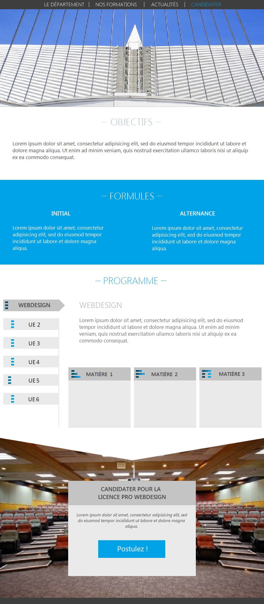
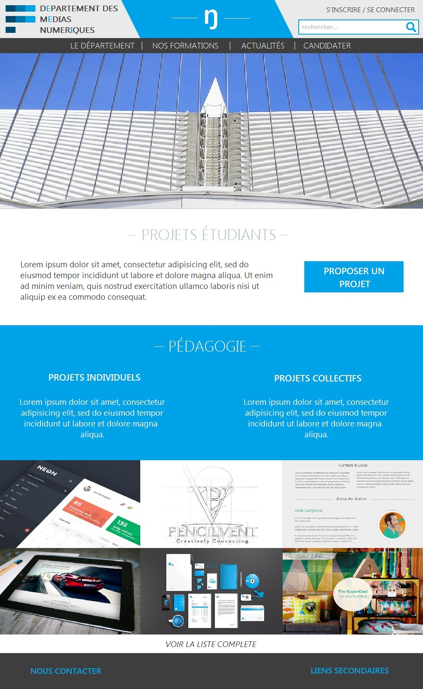
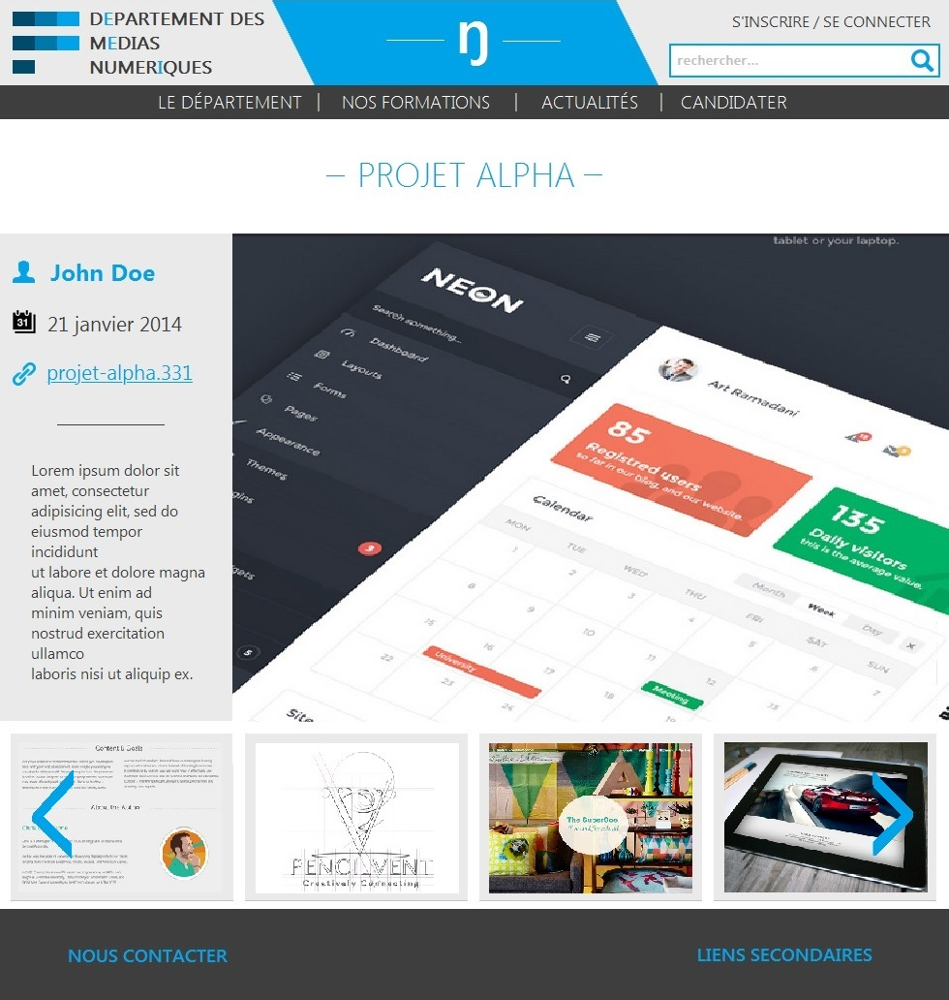

Le Département des Métiers du Multimédia et de l'Internet (MMI), anciennement appelé Services et Réseaux de Communication (SRC), forme les étudiants aux activités de communication d'entreprise, de création multimédia, et de gestion de réseaux.
Voir le siteAudit
Conception
Le site web de la formation va subir une refonte global majeure dans les mois à venir. La mission consiste, dans le cadre d'un projet d'étude, à proposer un nouveau concept de sa prochaine interface.
Ces interfaces sont réalisées suivant un système de grille. Le rendu des mock-ups se fait notamment à travers l'usage du logiciel de wireframing Axure Pro, complététe par l'utilisation d'Adobe Illustrator/Photoshop pour la réalisation du visuel de l'UI. Il est aussi convenu de respecter à travers la réalisation des maquettes une cohérence dans la navigation au sein du futur site MMI.
Le projet met en évidence 4 modèles distincts selon l'architecture de l'information définie au préalable. Les projets, la page d'accueil, les formations puis les actus.
Les modèles de page sont présenté ici dans l'ordre dans lesquels ils viennent d'être énumérés.
 Ce projet a été réalisé au cours de ma formation en Licence Professionnelle de Web Design.